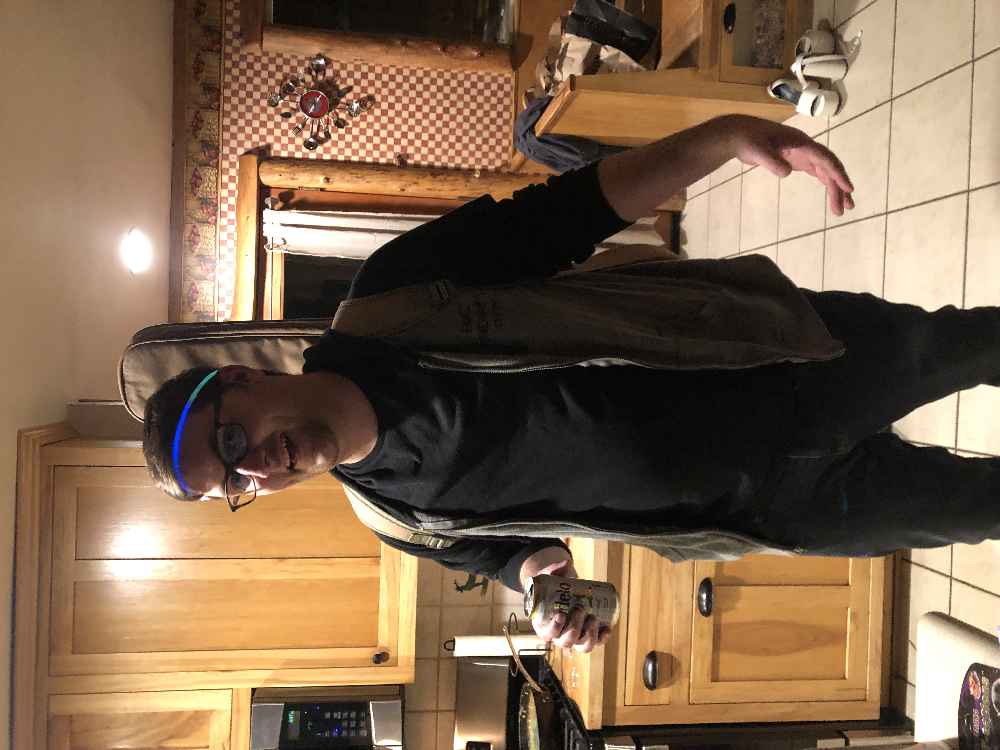

PHD Dire Warning
I don't know if what he's saying is true but I certainly don't want to take it and I don't to give away the password to my rna. Like I guard that with my life. I'm not signing up for a spike protein made in a lab from this crooks. It's so wild that this is going on. They are injecting children. People are getting booster shots although probably some are coming to their senses.
It's crazy to me how radical it is to just take your chances without a vaccine or a mask. It's called breathing the air and being human. I think the vaccine, if poison, is slow acting. That way, they can have most the people survive it while they get everyone to take it. Like a pirate giving poison wine to his crew to steal all the treasure for himself.
11/14/21
Self-Love
I love myself, I accept myself, I forgive myself. I'm proud of myself.
I work hard, kick ass, and take names.
I entertain my fantasy league. I sell insurance. I spit conspiracy theories and I write songs and play chess.
Today I went to the gym at night in my sweatshirt and slides because it's comfy. Then I went swimming and took a jacuzzi. It was nice.
I am going to be nicer to myself. Although I think I could do better, it's important for me to accept myself during the process of improvement. I really want a scale to weight myself and see if I'm losing weight, and I also want a blender to make smoothies. Peace out !
11/2/21
Cabin in the Woods
I went to a Halloween Party in a cabin in the woods over the weekend
It was very fun and a nice way to get away from my own thoughts.
I'm lucky to have such a great group of friends that we can do fun things with as adults with money.
Renting a cabin and splitting the rent for a weekend is an awesome time. Next time, I would like to bring a girlfriend with me.
If I can have a dating profile with fun pictures like this, instead of lonely selfies, and if I can hit the gym a bit more, instead of hitting the candy section of 711, I should be able to get some more dates, and actually find a girl I can take to cool events like this.
Life is long. I'm proud of myself for working through everything I've been through mentally. Ya, I got scarred, Ya I gave up and ya I went crazy. But I'm still here. I'm still me. I'm not done with life. I just have to shake off the "story" I've been telling myself about myself and start a new one.
Each month of this blog is a fresh start for my thoughts, personality, and focus. This month I want to focus on clarity. Just seeing through bullshit and taking sensible steps toward my desired life. I'm going to have my actions, and mind join together on a common purpose. I'm going to work hard, and move closer to who I want to be.
I want to be a better, more reasonable man. I'd like to be humbler, but also more confident. I'd like to stop doubting myself. I have no disability, but sometimes I act as if I do with my body. It's hard to explain but I feel like I doubt myself and feel like I'll make a fool of myself with my body. I'm not comfortable with my body. It's not how I learned to be. I used to like having my shirt off around people, but now I'm embarrassed.
Still, I got some Yoga in over the weekend with my friend's girlfriend and I will try to focus on that this month. I will focus on my body and stretching it and working it out properly. Happy body, happy mind.
That's my new slogan I will try out this month. Happy Body, Happy Mind.